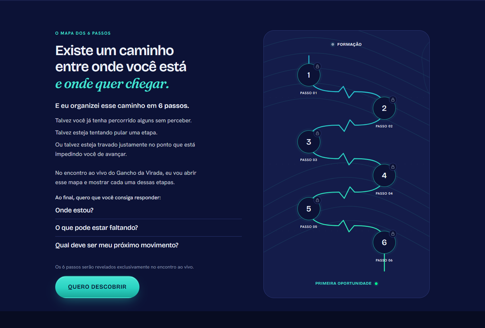

Três composições para comparar
Veja a versão atual e duas novas alternativas. Os previews mantêm todos os textos, a paleta, as fontes e o botão da página.
Mapa vertical em destaque, ao lado de uma coluna contínua de leitura.
Abrir página completa ↗